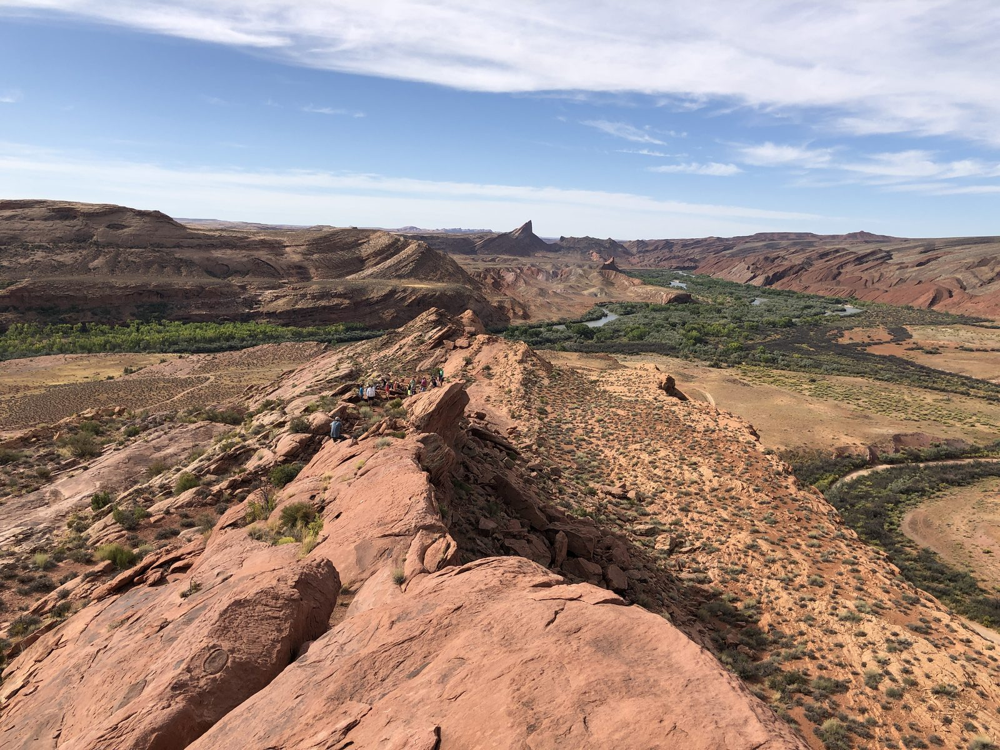
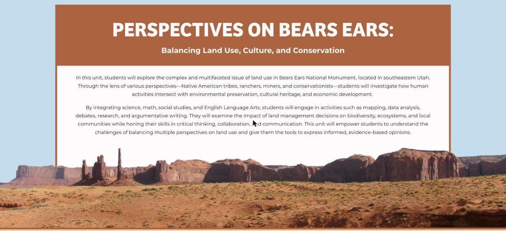

Perspectives on Bears Ears


Students explore how Native American cultural heritage, ranching, mining, and conservation meet on one landscape. They analyze maps and land data, research each perspective, debate, and write evidence-based arguments.
- Lessons on Native American perspectives on preservation, ranching and land management, and uranium mining in the region
- Two culminating paths: a pinwheel debate, or a school rally where students build booths for younger students and measure how many minds they change
- Paired with our class river trip down the San Juan River past Bears Ears
My role: co-designed and taught the unit with my sixth graders, then helped turn it into a free, downloadable unit for other teachers.